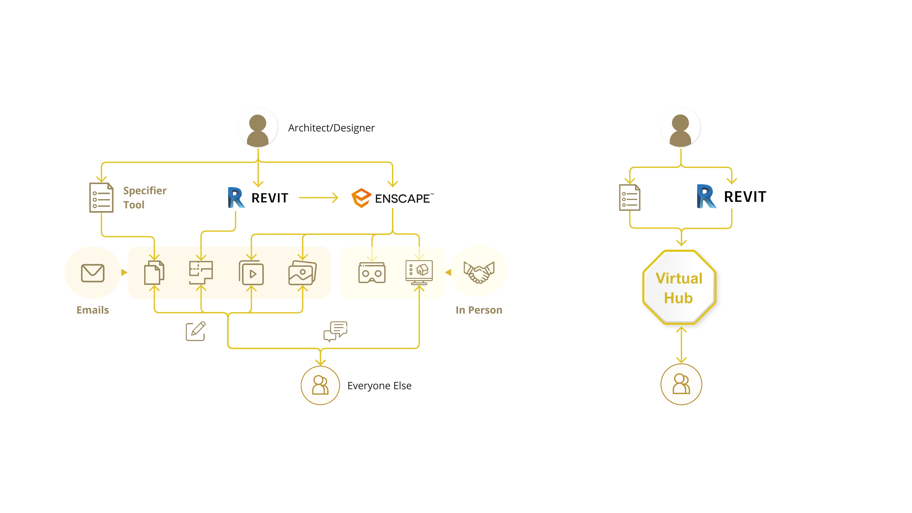

The brand's bronze line-icon library (#988058). Used in pitch decks, architecture diagrams, and explainer surfaces. ~80 glyphs covering people, files, processes, building types, devices, and platform actions.

Color #988058Stroke ~1.5 pxCaps roundFill noneFiles assets/icons/icon-library-bronze.jpg